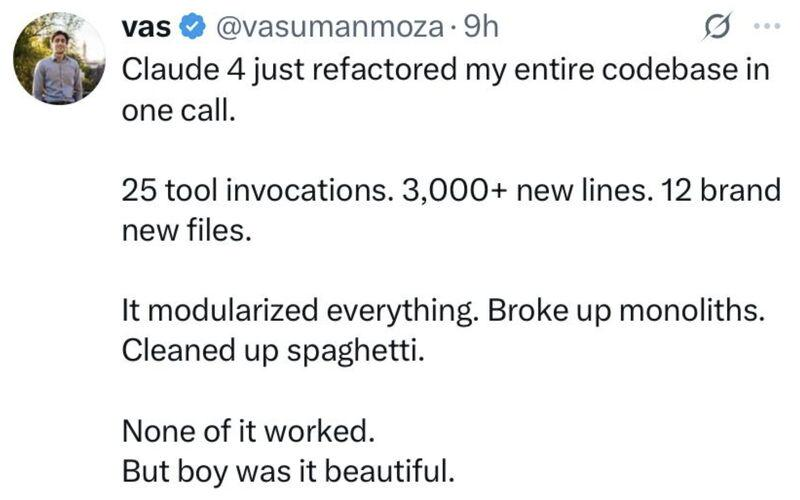

The AI Tarpit: Why You Can't Stop Reading Your Code
Published 2026-06-22
Figure 1: A vibecoder (pejorative) eating AI slop. Photo credit yours truly.
I read Abigail Haddad’s recent piece about not reading code and I violently agree. You still need to read your code! (mostly)
Granted, when you’re in an exploratory phase and are building a quick prototype, a data visualization, or an interactive wireframe to see if an idea might work, the "vibe coding" approach is very powerful. As Abigail's post points out, your attention is one of your most expensive resources, so why waste it on the how when you could be focusing on the what?
But, at what point does not reading the code turn into losing control of the code?
The Hidden Cost of building black boxes
There is an area between being a syntax expert and not knowing how your code works and that is where the danger lies.
When we stop reading the code, we begin to miss opportunities to find better methods, like the moments where you’re glancing at a script Claude is writing and realize, "Wait, if I just nudged it here, we could turn this local tool into a standalone web app that runs in the browser and simplify, and also WASM is cool so it doesn't count as excessive complexity!."
If you only look at the inputs and outputs, you will miss the structural opportunities that a quick glance at the implementation would reveal. You might get a tool that works, but you miss the chance to see how to build a better tool. Elegance isn't something we as an industry actually value over working code unfortunately, and fortunately computers are fast so janky tools can still be quite good.
Superfund Legacy Codebases
The bigger risk though isn't missing out on design improvements, or writing clean code, or avoiding clean code (pejorative), it’s about the long-term architecture of our systems and speedrunning our way into a tar pit.
You've probably experienced legacy codebases. They grow, they get complicated, and eventually, they become so tangled that even the original developers are afraid to touch them. Making a simple change becomes an expensive, high-risk operation.
With AI, we now have a new, much faster way to accumulate technical debt. We can create a Superfund Legacy Codebase at record speed.
If you don't read the code, you aren't making design choices and are delegating them to the AI. If we don't read the code, we are essentially letting the AI architect a system that we don't actually understand. Systems tend to accrete complexity, and generative AI are better at generating than subtracting.
Eventually a growing system hits a complexity ceiling, the point where the AI can no longer reliably make changes without breaking everything. Humans and their code has this same ceiling, but with skilled people you can maintain more complexity. AI is faster, until it's not.
Avoiding the Tarpit
Vibe coding without oversight is a one-way ticket into a technical tarpit. The less of our code we read, the less of our system we understand. The more we use AI to accelerate, the faster we might be accelerating into a level of complexity that even the best LLM can't help us untangle.
Abigail is right that we shouldn't spend our attention on implementation details in all contexts, but if we need to spend a good portion of our budget on auditing the implementation anyways it doesn't save us that much.
If we don't understand the foundation of what we're building, we might eventually find ourselves standing in the middle of a very impressive, very functional, but ultimately unchangeable mess. Superfund sites can cost billions to clean up and hurt a lot of people along the way, so consider how much time and money you can save by reading your code, especially in contexts that matter.

None of it worked, but boy was it beautiful